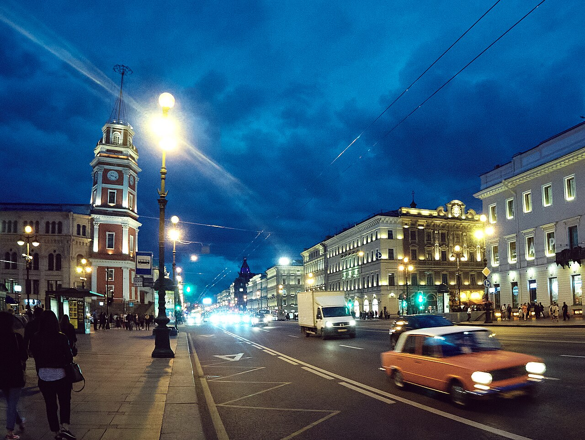

TRIPROTARVISOR
La Venezia del Nord

Eventi e feste
Se si va a San Pietroburgo in estate non è solo per i musei: è per gli eventi, e alcuni sono talmente legati alla città che da soli giustificano il viaggio. Le date però cambiano ogni anno, quindi quelle che trovate qui sono quelle delle ultime edizioni.
Notti Bianche
Sono le notti più strane dell'anno, e non una festa ma un fatto astronomico: a San Pietroburgo, che sta a 60 gradi di latitudine nord, da fine maggio a metà luglio il sole non scende mai del tutto sotto l'orizzonte. Il cielo resta chiaro anche alle due di notte e la città si riempie di gente che cammina lungo i canali per ore.
Il punto massimo è il 21 giugno, quando il sole resta sopra l'orizzonte per circa 17 ore. Le Notti Bianche non hanno un programma unico: sono centinaia di concerti, fiere all'aperto e banchetti lungo la Neva, e la gente le chiama anche "la notte bianca" al singolare, perché il cielo non diventa mai notte davvero.
Festival delle Stelle delle Notti Bianche
Si tiene al Teatro Mariinskij e dura più di una settimana, di solito la prima decade di luglio. Ci sono opere, concerti e balletti dello Zecchino d'Oro, con le stesse date da oltre vent'anni, e i biglietti vanno presi con settimane di anticipo. Se l'opera non è il vostro forte, andate almeno a una prova generale: costano meno e si vede ugualmente.
Vele Scarlatte
Questa la conoscono di più gli studenti, e non a caso. È la festa di fine giugno dedicata ai diplomati, che escono di scuola: una fregata passa sulla Neva con le vele color rosso acceso, seguita da una lunga sfilata di barche, e la sera si chiude con i fuochi d'artificio. Il nome viene da una novella di Konstantin Dmitrievic, un capitano pirata che il governatore offre in dono per salvarsi la vita, anche se questa versione della storia si è inventata di sana pianta qualche anno dopo.
Maslenica, a febbraio
L'unica festa grande fuori stagione: la "settimana degli gnocchi", con le feste del burro e della neve. Le maschere girano per tre giorni, gli gnocchi si mangiano in piedi e le strade si riempiono di falò. È rumorosa, gelida e divertentissima, ma naturalmente in un'altra stagione.
Cosa fare prima di partire: prenotate con almeno un mese di anticipo hotel e biglietti per il festival, e non aspettate di trovare posto in treno durante le Notti Bianche, che sono le date più richieste dell'anno.